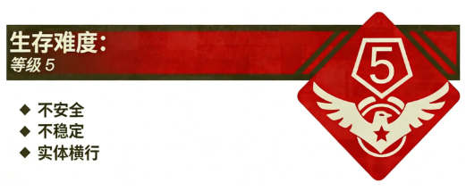

Level 1.1 是 Level 1 的一个子层级，此层级非常危险，且难以离开，请流浪者尽量避免进入此层级。
Level 1.1 被描述为 Level 1 的“缩小版”，和 Level 1 具有很多相同的特征，流浪者在刚刚进入此层级时默认处于跑道上方。
为了方便描述此层级，S.M.E.G 将此层级划分为了三个时间段，请进入的流浪者仔细阅读：
“安全期”指流浪者刚刚来到 Level 1.1 的 1 分钟内的时间。在这段时间里，流浪者可以来到饮水机旁使用“水杯”装水以应对一会儿的跑操时间，也可以观察操场地形，寻找出口。
过了“安全期”后，则会进入“准备时间”。
“准备时间”指在流浪者进入 Level 1.1 后的 1~3 分钟内，在这段时间内，此层级所有的出口都会关闭，且所有资源消失，操场上会陆续开始出现由“老师”带领的路队，且“执勤队员”会开始出现在跑道旁边。由于未知原因，这些实体都呈现出比正常状态下更加强烈的攻击性。流浪者可以在这段时间内继续观察地形。在“准备时间”快要结束的时候，流浪者会被“老师”催促进入队伍，准备开始跑操。
“跑操时间”指流浪者进入 Level 1.1 的 3 分钟后，这段时间内，操场上破旧的广播会开始播放跑操音乐，此音乐具有未知的精神危害，会严重影响流浪者的心理，且流浪者会被强制要求跟随自己班级的队伍绕着跑道进行奔跑，奔跑的时长未知暂定为 ∞ 小时，流浪者会逐渐感到体力不支，但一旦停下，就会被“执勤队员”制裁。据不完全统计，已经有 7 名流浪者因过度疲劳在此层级倒下。
需要注意的是，在此时间段内，流浪者的资源消耗速度会快速提升，比如一壶水可能在 1 分钟内就被喝完，一块饼干起到的效果微乎其微。这段时间非常考验流浪者的身体素质和心理素质。
再次声明：此层级容易进入，难于离开，请流浪者尽量避免此层级！
跑抓社：“跑抓社”最喜欢奔跑，在 Level 1 奔跑被制裁后，经常在 Level 1.1 展开跑抓活动，如果流浪者实在缺少物资，可以向这个组织寻求帮助，他们在进入这个层级前一般都会准备好足够的物资，且对流浪者比较友善。如果你的身体素质也很好，可以考虑加入他们。如果想离开该层级，也可以向他们寻求帮助。
来自作者的多嘴：这个组织是个人物
入口：此层级具有多个入口，请流浪者尽量规避。
出口：本层级的出口极其稀有，请进入的流浪者尽可能去寻找：